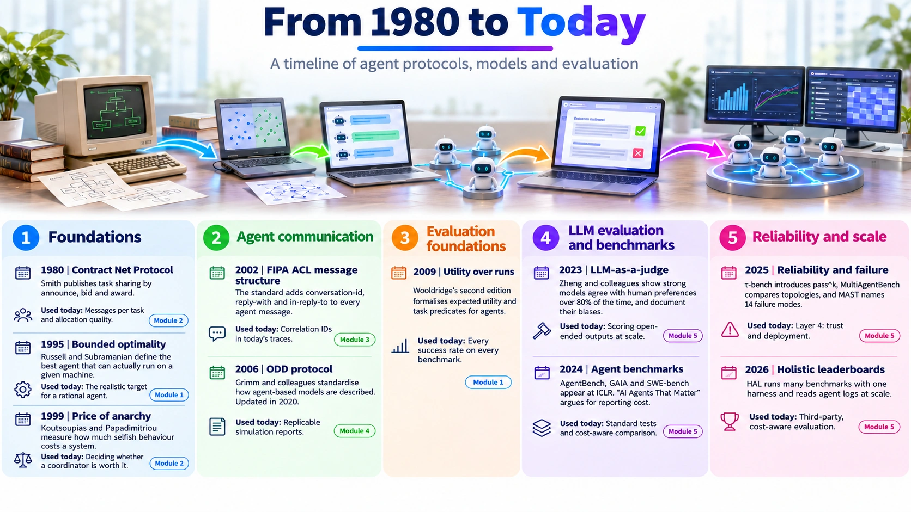

The big picture
Before the details, see how everything fits: who is involved in evaluating agent systems, how the ideas grew from 1980 to today, one system followed through all four layers, and a quick way to choose metrics for your own project.
The evaluation ecosystem
Evaluating an agent system is not one tool or one paper. It is a chain: theory says what success means, platforms build the system, instruments record it, benchmarks test it, methods turn the results into fair comparisons, and people decide. Select any item to see what it is and where you learn it.
The loop closes. Failures found after deployment become new benchmark tasks and new research questions, which feed back into stage 1.
How to read it with the four layers. The ecosystem shows who and what is involved. The four-layer framework shows what you measure. Each item’s detail lists the layers it serves, so you can see, for example, that pass^k and MAST both live in Layer 4.
Jump to the module for each layer
From 1980 to today


The ideas you learn in CAI 461 are not old history replaced by LLMs. Each new method re-uses an older one: pass^k is P(Ψ) measured repeatedly, the cost frontier is Pareto efficiency, and OpenTelemetry traces do what FIPA conversation IDs did. Each event below links to the module that teaches it.
- 1980
Contract Net Protocol
Smith publishes task sharing by announce, bid and award.
Used today for: Messages per task and allocation quality · Module 2
- 1995
Bounded optimality
Russell and Subramanian define the best agent that can actually run on a given machine.
Used today for: The realistic target for a rational agent · Module 1
- 1999
Price of anarchy
Koutsoupias and Papadimitriou measure how much selfish behaviour costs a system.
Used today for: Deciding whether a coordinator is worth it · Module 2
- 2002
FIPA ACL message structure
The standard adds conversation-id, reply-with and in-reply-to to every agent message.
Used today for: Correlation IDs in today’s traces · Module 3
- 2006
ODD protocol
Grimm and colleagues standardise how agent-based models are described. Updated in 2020.
Used today for: Replicable simulation reports · Module 4
- 2009
Utility over runs
Wooldridge’s second edition formalises expected utility and task predicates for agents.
Used today for: Every success rate on every benchmark · Module 1
- 2023
LLM-as-a-judge
Zheng and colleagues show strong models agree with human preferences over 80% of the time, and document their biases.
Used today for: Scoring open-ended outputs at scale · Module 5
- 2024
Agent benchmarks
AgentBench, GAIA and SWE-bench appear at ICLR. “AI Agents That Matter” argues for reporting cost.
Used today for: Standard tests and cost-aware comparison · Module 5
- 2025
Reliability and failure
τ-bench introduces pass^k, MultiAgentBench compares topologies, and MAST names 14 failure modes.
Used today for: Layer 4: trust and deployment · Module 5
- 2026
Holistic leaderboards
HAL runs many benchmarks with one harness and reads agent logs at scale.
Used today for: Third-party, cost-aware evaluation · Module 5
| Old idea | New form | What stayed the same |
|---|---|---|
| Success probability P(Ψ) | pass^k | Count how often the task predicate is true, now across repeated trials |
| Pareto efficiency | Cost-accuracy frontier | Keep only options that nothing else beats on every criterion |
| FIPA conversation-id | OpenTelemetry trace and span IDs | One ID joins every step of one task across agents |
| JADE Sniffer | LangSmith and tracing dashboards | Watch the messages to find where coordination breaks |
| Verification and validation | MAST failure labels and judge validation | Check that what you measure means what you think it means |
One system, four layers: the PNU Smart Shuttle
Eight shuttle agents bid for ride requests with Contract Net. Follow the same system from the bottom layer to the top and watch each layer catch a problem the one below missed.
The numbers are illustrative, chosen to show how each measurement is read. Your own simulation will give different values.
-
1
Layer 1 · Individual agent
Does each request succeed?
Measure. Ψ for one simulated morning = every student is picked up within 10 minutes (achievement) and no shuttle ever exceeds its seats (maintenance). Run 30 mornings.
Mornings that succeed90%95% interval± 10.7%Seat violations0Reading. Good, but the interval is wide: 30 runs cannot tell 90% from 80%. Layer 1 alone says “fine”.
-
2
Layer 2 · Interaction
Is the group outcome good and fair?
Measure. Messages per request, total waiting time against an optimal assignment, and the longest single wait.
Messages per request25Total wait vs optimal1.12×Longest wait14 minReading. 3 × 8 + 1 = 25 messages is affordable. Waiting is only 12% above the optimum. But one student waited 14 minutes, so the egalitarian view finds a fairness problem the average hid.
-
3
Layer 3 · System
Does it hold up at peak time and when a shuttle fails?
Measure. p95 time to award a request as demand rises; success when one shuttle is removed at minute 3.
Requests per 5 min p95 time to award 10 0.4 s 30 0.9 s 50 (class change) 3.1 s Success, all shuttles90%Success, one removed71%Reading. The knee is at the class-change peak. Worse, losing one shuttle drops success by 19 points, because a request awarded to the failed shuttle is never re-announced.
-
4
Layer 4 · Trust and deployment
Would students trust it every day?
Measure. Replay each of the 30 mornings 5 times with different seeds. A morning passes only if all 5 replays succeed (pass^5). Search the traces for awards with no pickup.
pass^190%pass^562%Award, no pickup12 of 1,500Reading. The same 90% system is fully reliable on only 62% of mornings, so in more than one week in three a student will meet a missed pickup. The traces name the cause: an award without a timeout. Fix it with a re-auction after 2 minutes, then measure all four layers again.
The lesson. Layer 1 said 90% and stopped there. Layers 2 to 4 found a fairness problem, a peak-time knee and a missing timeout. Lower layers are necessary but not sufficient. Try the same exercise with Case B or C on the case studies page.
Choose your metrics
Answer five questions about your own system, for the lab or your project. You get a starting set of metrics for each layer, a tracing tool, a baseline and a failure mode to watch for.
This is a starting point, not a rule. Add or remove metrics and say why in your report.